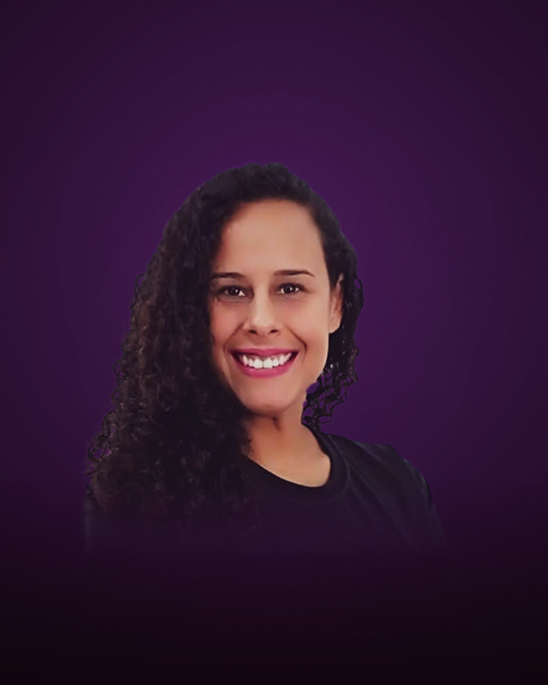
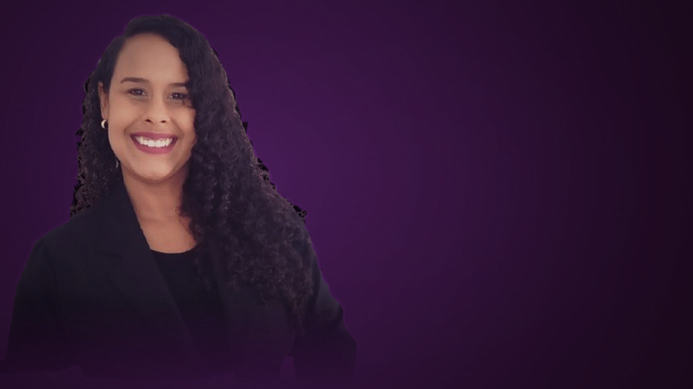

Posts do Instagram: os 5 modelos
Cada peça é HTML e CSS num quadro de 1080×1350 que escala para caber na tela. As frases são sugestões, você aprova. Nada aqui está publicado.

Técnica é cuidado com método.
(a) Retrato + frase, PT
Look A, foto sangrando, frase em DM Serif 84 px.
frase: sugestão, você aprovaCabelo bonito começa na mão que aprendeu.
(a) Retrato + frase, PT
Outro recorte da mesma foto.
frase: sugestão, você aprova
Tu pelo, con calma y con técnica.
(a) Retrato + frase, ES
Frase em espanhol para o salão.
frase: sugestão, você aprova
Peluquería en Alicante
[confirmar a lista]- Corte
- Mechas
- Color
- Depilación
Pide cita por WhatsApp
(b) Serviços do salão, ES
Foto no arco, painel creme. Lista a confirmar.
frase: sugestão, você aprovaEu já trabalhava como assistente e não conseguia fazer escova modelada. Fiz o curso, treinei bastante e agora as clientes pedem a minha escova.
ALUNA DO CURSO ONLINE
(c) Citação de aluna
Paráfrase fiel de um comentário real, sem nome.
frase: sugestão, você aprovaAULA DE 1 MINUTO
Como segurar a escova direito
arraste →
(d) Capa de carrossel
Série “Aula de 1 minuto”. O tema vem de um relato real de aluna.
frase: sugestão, você aprovaCurso online de cabeleireira

- 5 módulos
- Certificado
- Mentorias ao vivo
- Comunidade
- Garantia de 7 dias
Link na bio
(e) Chamada do curso
Sem preço. O preço só entra com o seu aval.
frase: sugestão, você aprovaPrévia da grade 3×4
Regra: 1 peça de texto a cada 3 retratos. A primeira linha são os 3 fixados: apresentação, antes e depois, como marcar hora (aqui só quadros de lugar; o conteúdo real vem de você).
● FIJADOS (1ª linha)
Presentación
 Antes y despuésCómo reservar
Antes y despuésCómo reservarEu já trabalhava como assistente e não conseguia fazer escova modelada. Fiz o curso, treinei bastante e agora as clientes pedem a minha escova.
ALUNA DO CURSO ONLINE
Tu pelo, con calma y con técnica.

Salir de la peluquería sintiéndote tú.
Peluquería en Alicante
[confirmar a lista]- Corte
- Mechas
- Color
- Depilación
Pide cita por WhatsApp
Tu pelo, a tu medida.
Curso online de cabeleireira
- 5 módulos
- Certificado
- Mentorias ao vivo
- Comunidade
- Garantia de 7 dias
Link na bio
AULA DE 1 MINUTO
Como segurar a escova direito
arraste →
- Linha 1, fixados. Presentación (vídeo), Antes y después, Cómo reservar.
- Texto: citação, serviços e capa de aula. 3 peças de texto para 9 imagens.
- Ritmo: o retrato vende, o texto pontua. As fotos são recortes diferentes das mesmas imagens, sem foto nova.
- Corte da grade: o Instagram mostra 3:4, então o texto fica na área segura (x 90–990, y 140–1210).